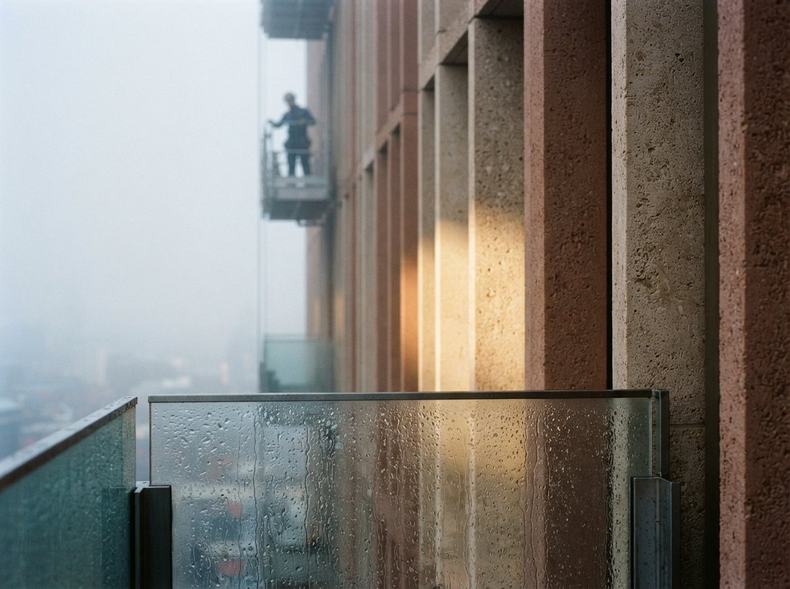

For two years the AI rendering roundup was a genuinely useful genre, because the field was churning fast enough that last quarter's list was already wrong. New tools appeared monthly, real capabilities shifted, and a fresh comparison actually told you something. That era is over, and this week's sweep is where it shows. Read enough of these lists in one sitting and you stop learning about tools and start learning about who wrote the list.

The set stopped changing
Here is what the roundups agree on when you ignore the ranking. Gendo. Veras, usually through Enscape or as a Chaos integration. ArchiVinci. Spacely. A real-time engine or two. An enhancer like D5 or Magnific in the finishing slot. A student-friendly or budget pick such as Rendair. That is the recurring cast across a chaos.com comparison, a gendo.ai top ten, a meltplan workflow-first table, an xpressrendering guide, a maverickframe review, and a vizbase test. Different authors, different affiliate relationships, near-identical rosters.
Convergence like that is not a coincidence and it is not a conspiracy. It is what a maturing market looks like. The obvious contenders have been tried by enough people that consensus formed, the weak tools fell out of the conversation, and the survivors are known quantities. When six independent lists name the same seven tools, the useful signal is not the ranking on any one of them. It is the roster they share.
The order is the part being sold
Now watch what happens to that shared roster once each publisher gets hold of it. The gendo.ai piece runs the same names and concludes, in a heading you could not make up, that Gendo is the best AI rendering software for architects. Rendair's own blog puts Rendair at number one. A tool with an affiliate program tends to top the list on the sites carrying its links. The set is stable across all of them. The number one slot moves in lockstep with the byline.
That is the whole trick, and once you see it you cannot unsee it. The ranking is not an assessment of the tools. It is a readout of the incentives behind the page. The set is where the honesty is, because no single vendor can quietly delete a competitor everyone else lists. The order is where the selling is, because the order is the one thing a publisher can bend without getting obviously caught.
The shared roster is the market telling you the truth. The number one slot is a vendor telling you a story. Read the first, ignore the second.
Convergence is a gift, not a warning
The reflexive take here is cynical: the lists are captured, so distrust all of them. That is half right and it throws away the useful half. A settled set is the market doing your first screening pass for free. The tedious work of going from forty tools nobody has heard of down to a shortlist of seven worth an afternoon has already been done, repeatedly, by people with no reason to agree with each other. You do not have to trust any one list to trust the intersection of all of them.
So take the convergence as a finished shortlist and move straight to the part the lists cannot do for you, which is deciding what you actually need. A ranking is a single number pretending to answer a question that has at least four axes. The tool that tops a list built around one-click speed is the wrong pick for a firm that lives inside Revit, and neither list will tell you that, because neither list knows which firm you are.
Choose on your constraints, not their rank
The shortlist is the same for everyone. The right pick from it is not. Four constraints do almost all the deciding, and none of them appear in a ranked list because they are properties of your studio, not the tool.
| Your constraint | What it should decide |
|---|---|
| Host application you live in | A native add-in inside your modeler beats a marginally better tool you have to export to. Workflow friction outweighs a rank or two. |
| Fidelity to your model vs speed | If the geometry has to stay yours, weight tools with strong design lock and structure conditioning. If you need mood frames fast, weight the opposite. |
| Budget and billing model | A credit system and a flat seat price fail differently under deadline load. Match the meter to how your renders actually cluster. |
| Data and client policy | Where the images go and whether your drawings train a model is a hard gate for some clients and irrelevant for others. Check before you commit, not after. |
Run the shortlist through those four questions and it collapses to one or two real candidates fast. That is a decision you can defend to a principal. A leaderboard position is not.
Where the settled list still lies
Two failure modes survive even a shortlist you trust. The first is that a stable set freezes out newcomers. A tool that shipped last month with a genuinely better approach has no roundup presence yet, so the convergence that helped you screen also quietly hides the next thing. The set is a lagging indicator by construction. Keep one eye on the forums, where a new tool shows up in a practitioner's raw output long before it earns a slot in anyone's top ten.
The second is that the shared roster still cannot tell you the one thing every architect most wants to know, which is how faithful each tool is to the model you feed it. That is the axis the lists are worst at, because it is hard to demo and easy to fake with a flattering hero shot. The set narrows your candidates. It does not test them on your building. Only your building does that, which is why the last step is always the same: take your two finalists, render the same difficult view through both, and believe the pixels over the paragraph.
Our take
The AI rendering roundup has quietly changed jobs. It used to be a scouting report on a fast-moving field. It is now a settled shortlist wearing a ranking as costume. Treat it accordingly. Harvest the roster, which is the one part six competing publishers accidentally agree on, and throw away the order, which is the one part each of them had a reason to rig. Then do the work no list can do for you: hold the shortlist against your host app, your fidelity needs, your budget, and your data rules, render your hardest view through the two that survive, and pick the one that lied to you least. The leaderboard was never the deliverable. Your building is.
Written from the 6 August 2026 intel sweep, which surfaced eight best-AI-render roundups (chaos.com, gendo.ai, meltplan, xpressrendering, maverickframe, vizbase, rendair, and a YouTube four-tool shootout) naming a near-identical set of tools in conflicting order. ArchiGen AI carries no sponsored placements.